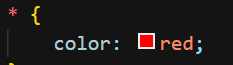
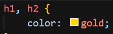
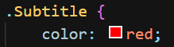
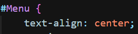
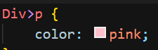
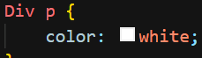
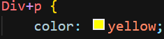
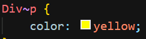

Mais sobre seletores
Nessa aula, iremos abranger os diversos tipos de seletores.
Anteriormente, vimos como é a aplicação de seletores de elementos, Class e ID.

Vamos revê-los e ver a aplicação de outros modos agora.
Universal
Se aplica em todos os elementos do documento.Exemplo:
Texto
Seleciona pelo tipo de texto (h1,h2,h3)Exemplo:
Class
Seleciona a class do elemento (Class padrão, que utilizamos).Exemplo:
ID
Seleciona o ID criado.Exemplo:
Filho
Seleciona o elemento filho (Dentro e no primeiro nível de contato) do outro elemento.Exemplo:
Descendente
Seleciona os elementos descendentes, ou seja, todos que foram específicados dentro de outro..Exemplo:
Adjacente
Seleciona o elemento irmãao próximo do outro.Exemplo:
Geral
Seleciona o elemento irmão próximo, porém, não precisa ser necessariamente o posterior.Exemplo:
Ordem de precedência dos seletores:
Para mais informações sobre seletores, clique aqui.